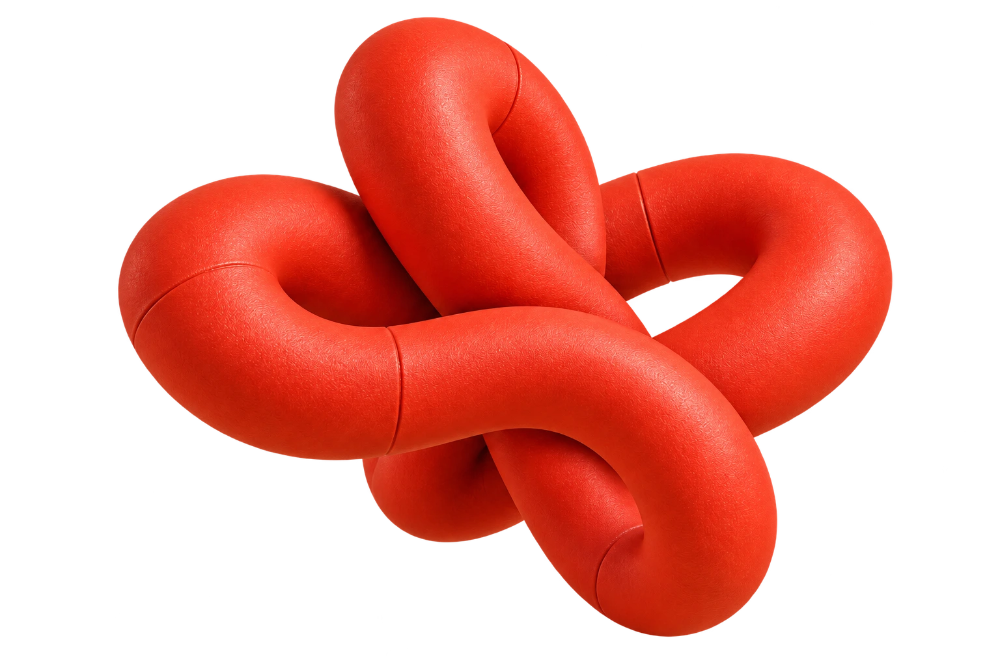

Marco van Hylckama Vlieg / Product designer & builder
Serious work.
Playful mind.
Twenty years making complex products feel natural. Still curious about what happens next.
Explorethe work ↗

ColorTomato selected
IDEAS INTO THINGS. IDEAS INTO THINGS.
Selected work
Curiosity,
with follow-through.
EndemolUX / engineering1998-2005
UX and engineering lead for multilingual platforms across an international entertainment portfolio.
Yahoo!Design leadership2005-2013
Directed global prototyping teams, personalization work, design process, and senior talent development.
GoogleCloud AI / Android2013-2017
Built high-fidelity prototypes for Cloud AI, Assistant, and Android to settle product decisions quickly.
Walmart LabsMobile / voice2017-2021
Led mobile, voice, and personalization design through a major retail transformation.
Kohl'sCommerce / AI2021-now
Designed cart, checkout, wallet, account, and self-checkout while advancing AI practice.
AI-CreatedIndependent labongoing
Independent product lab for AI tools, games, music, video, and useful experiments.
20+
years of product design